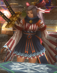
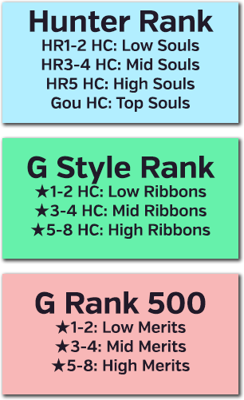
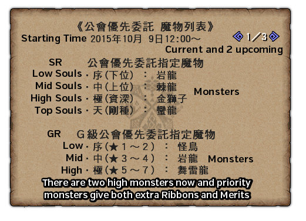

. The Flame Icon itself does not mean the quest is HC, you have to actually turn HC mode on!
. The Flame Icon itself does not mean the quest is HC, you have to actually turn HC mode on!As soon as you hit HR5 you can begin Style Rank. Starting it is incredibly trivial and is automatically triggered when you walk towards the Guild Master after simply reaching HR5.

Style Rank enables a number of effects including special SR Skills, the use of two new movesets per weapon type and access to Hardcore monsters. You can test out the various weapons at the bed in your house to see how their SR movesets work and you can read detailed overviews in the Weapons Section under Detailed Weapon Information.
To enable the new movesets use any large box which allows you to change gear (such as the one in the Blacksmith) and go into the section where you would normally choose equipment followed by the newly added final option.
變更裝備 > 裝備秘傳書
This will bring you to a new menu where you should select your weapon type, followed by the second option and then your preferred style.
Weapon > 型態 > Style
At HR5 you will have Heaven Style (天之型) and Storm Style (嵐之型) while at this rank the best style for most weapons is Storm Style with some variation. You can swap the style at any time and are not locked to any of the three initially available.
After you reach G Rank you will be able to interact with the Guild Master as above again to unlock Extreme Style (極之型), this style alters weapons to a huge degree compared to Storm or Heaven styles and is generally always the best in slot style for every weapon class for high level play. You should swap all weapons to this style upon hitting G Rank and unlocking it.
You can find detailed information on each weapon's SR movesets in the Weapons Section under Detailed Weapon Information, the Standard Weapons covers all the normal Mainline weapons and Tonfa and Swaxe each have their own sections as there is simply more to go into for them.
Your Book of Secrets must be equipped in order to use any alternative movesets, if you somehow disabled it go into the SR menu and choose the first option followed by the first option to toggle it back on.
變更裝備 > 裝備秘傳書 > Weapon > 裝備秘傳書 > 裝備
HardCore is a toggleable option for SR quests that transforms the large monsters in the quest into HC monsters. If a quest can be made hardcore it is indicated by a flame icon in the quest list at the top right of its name . The Flame Icon itself does not mean the quest is HC, you have to actually turn HC mode on!
The HC option itself can be toggled on the final screen after selecting a quest where you confirm player numbers, password etc.:

HardCore Monsters are more powerful versions of monsters that have new skills, abilities and looks. Many HC monsters come with a boost to the levels of their Roars, Wind or Quake levels, protection wise this means you will need Super Earplugs, Quake Res +2 and Dragon Wind Breaker.
Completing a quest that is toggled to HC will grant you SR Weapon Souls (a ticket item visually), these are used in the crafting of some weapons and armour related to the weapon type (see Hiden Sets). If you are using a weapon within the Rarity Limit stated in your Book of Secrets you will gain a multiplier for HRP (3x), SRP (4x), Zeny (1.5x) and GCP (1.5x), this makes HC quests a very good way of gaining ranks. As of G10 most of these multipliers are irrelevant and instead are only notable for multiplying their equivalent's on your Partner (Partner Rank and Partner Weapon rank.)
The only difference in a Quest that you have made Hardcore is the monster or monsters themselves. If a quest has multiple large monsters they will all become their Hardcore variants.
G Rank quests get all the same effects as normal Hunter Rank HC ones, the multipliers are different and obviously apply to G versions of the ranking points and currency (GRP, GSRP, Gzeny).
HC Carves are simply an additional type of carve available from HC monsters. Generally speaking, each type of monster will have one HC carve per tier they have (HR1-2, HR3-4, HR5-6, G Rank).
The standard way to get HC Carves is simply from actually killing and carving a monster, but there are a small number of event quests that can reward them as normal rewards. The standard rate for a HC Carve is 5% and the rate for a GHC carve is 2%.
These are used fairly commonly across gear, basically service the role of a low% carve like Gems or Plates in anything added since Hardcore Monsters became a thing.
If you carve an HC Carve you will hear a special jingle distinct from the normal carving success sound. HC carves may be carved by your Partner and will appear in the rewards after a quest (no jingle). While on Premium the Legendary Pugi can also get them in the same manner as your partner.
N Points and Festival Points can also be spent on HC Carves. These will cost around 100 N Points or 500 Festival Points minimum. The Diva Defense event also rarely allows you to buy carves with standard GCP if you have the relevant Prayer active. See the Regular Events section for more details on Festival and Diva Defense.
HC Carves are unique in that they are outside of the normal carve pool. This means that when you carve a monster you roll first for the pool from which you get an item and then after that the item itself.
For anything that can cause you to reroll carves such as Caravan Gem skills you will roll for the table on the second attempt too. As an example, if you initially carved a Lavasioth Scale and got a reroll you would have 5% chance of the new carve being a HC and 95% of it being either a Shell (73%) or a Fang (27%).
Weapon Souls are a per weapon ticket type that is rewarded for killing any HC monster. Each weapon has 4 different levels of Souls basd on the rank of the monster fought.
| Weapon Soul Types | |
| 魂・序 | Low Soul (HR1-2) |
| 魂・中 | Mid Soul (HR3-4) |
| 魂・極 | High Soul (HR5, non-Gou) |
| 魂・天 | High Soul (HR5, Gou) |
For example fighting an HR17 HC Lavasioth with SnS would grant a SnS Soul (Low) (單手劍魂・序).
Weapon Souls are used to craft and upgrade certain weapons and armours. A lot of gear during and most decent gear past HR5 will require at least one of these to be upgraded or crafted.
Souls are heavily utilised in Hiden Grind which is typically started mid to late game, check the Hiden Grind section for more information on that.
At GSR1 you gain access to Ribbons and at GR500 you gain access to Merits. These function nearly identically to the aforementioned Souls but are gained from GHC and normal G Rank quests respectively. These are both covered in depth in the proper Hiden section below.
After you have Style Rank you will gain access to the ability to select a Style Rank Skill. These are permanently active buffs similar to armour skills but that do not take any slots. The skills and instructions on how to equip them are below.
You can equip your first skill by going into a weapon's Book of Secrets menu and select one of the Special Effect (特殊效果) options followed by one of the skills above. After you hit GSR100 you will be able to equip two skills and up until that point you will be able to equip 1.
變更裝備 > 裝備秘傳書 > Weapon > 特殊效果 > Skill
At HR5 you gain the basic Defense Skill, at HR6 you gain all the various Elemental Res skills and the first version of Sharpening Up and at HR7 you get access to Affinity Up and max Sharpening Up. All of the Res and Defense skills progress naturally as you rank up in G Style Rank with some having the requirement of GSR999 in the weapon or multiple weapons to be unlocked or maxed out.
The Book of Secrets status page shows everything immediately related to Style Rank, it can be accessed either through the Equipment Box or viewed through the menus (view only, no changing settings) in 狀態 > 秘傳書狀態.
The most notable of these stats are the Attack Up (攻擊力) and Attack Ceiling (攻擊力上限解放) skills!
To clarify, this does not directly buff your Attack but instead allows you to have higher values of attack without hitting a ceiling.
It is incredibly important that you raise the Attack Ceiling while you progress through G Rank, the default limit of 800 is incredibly easy to reach in recent updates. Z1 especially adds a lot of skills that stack attack and considering Zenith Weapons have up to 580 base True Raw and that GSR1 already adds +50 True Raw and skills can instantly add +150 True Raw you will find yourself going past 800 very easily indeed.
Each weapon in Monster Hunter has its own internal multiplier that is applied to its True Raw value, you can divide the displayed attack on a weapon to see their True Raw but every weapon has the same limits based upon your Attack Ceiling level.
For a practical example of how this works, if you had no attack ceiling levels while using an SnS that was pushed to 3,080 Attack (2,200 True Raw) by your skills, you would only ever have 1,120 Attack or 800 True Raw. This is because it hits the default 800 True Raw cap causing you to lose 1,960 Attack or 1,400 True Raw.
If you had 22 levels your ceiling 2,352 Attack or 1,680 True Raw which means that in this case you would be actively losing 728 Attack or 520 True Raw.
Finally if you had 35 levels your ceiling would be 3,080 Attack or 2,200 True Raw, as this covers your 3,080 Attack perfectly you would get all of it. Of course if you then used a Power Pill or were affected by a Demon Horn you would suddenly be over your ceiling and would again be losing some of your attack power.
A good starting number to aim at is around 50 levels, this will cover most skills pre-hiden including being buffed by Hunting Horns and having Adrenaline active. Later game you will want to push much higher and should grind it up to around 190 to cover most use cases with late game skill sets. The Damage Calculator automatically calculates your required number of My Missions and Attack Ceiling level based on values and skills you might want to utilise if you want an exact number.
Actually increasing the value of the Attack Ceiling is done by completing My Missions, these are detailed in the next section below.
My Mission is a series of objectives that are unlocked after you hit HR6 and unlock Style Rank. There are two types of these missions, the first are the Medal Series that are purely vanity oriented and do not have any notable effects.
The second series is the Weapon Series which are used to enhance four different skills on all weapon types.
The Medal Series are the purely vanity challenges that have an associated Hunter Navigation Task that gives 30x My Mission Tickets (挑戰達成證) that allows you to skip the Weapon Series tasks. These tasks can be taken in your house in the SR Display Room which has a bullseye icon next to it, this unlocks at HR5.
As mentioned the Weapon Series are global across all your weapons, you can view your active My Mission by looking at your Book of Secrets (狀態 > 秘傅書狀態). This will display the task number you are on, the target and any progress towards the goal. This progess is saved even if you log out.
Both the standard Hunter Rank and G Rank quest NPCs have options dedicated towards these missions, selecting it will automatically search for relevant quests that meet the requirements. But you will still need to toggle HC manually if it is required by the mission you are on!
The number of My Missions you should realistically take varies massively depending on your level of progression, the following are some estimates to aim for that give you wiggle room and should cover most skill sets used at that point and most play styles:
Using this site's Damage Calculator will generate you an accurate rating based on the skills entered. The above is very broad to cover every possible scenario and avoid ever losing raw.
Each of the missions given to you can be skipped by using certain items. Specifically you can use My Mission Tickets (挑戰達成證) which are fairly rare naturally or by simply spending lottery coins. You can find the skip option on the Guild Master from who you get SRs and GSRs. Skipping using lottery coins is definitely not recommended.
Days of premium will give you 40 My Mission Tickets and you can trade junk weapon tickets you might get from gambling on the lottery system for them on the combination NPC.
All weapons in the game have a number of associated Hiden Armours and Decorations. These provide points in their weapon's specific Weapon Tech Skill which is a skill catered specifically to a weapon type. This skill always grants Super High-Grade Earplugs and an attack multiplier of at least 1.2x for Melee and 1.3x for Ranged.
Having one of these skills is commonly referred to as having 'Hiden' for that weapon. Having Hiden means that you have at least 5 decorations for that specific Hiden type. These decorations are made by converting maxed out Hiden Armours into Decorations.
Getting your first Hiden is a very long process involving 775 hunts at minimum that will likely take at least 30+ hours of play with a good set. Do not go into G Rank thinking you should start Hiden Grind, it is very much something to do after you have an established set, starting it too early is incredibly likely to cause burn out! See the G Rank section on a guide on efficient grind that goes more in depth than this section!
All weapon types in the game have an associated Weapon Tech skill, this is a skill that grants a skill that massively buffs its associated weapon type, these are detailed below:
Hiden Armour granting these technically becomes available at HR6 but cannot be finished until GR500, completing one of these sets is one of the big grinds you can expect to undertake mid to late game.
A proper guide to this guide is in the G Rank section!
This section simply details the absolute basics of the grind rather than how to actually do it efficiently!
Creating Hiden Decorations is a process that lasts until late G rank. You can start working on Hiden Armour from HR5 but you cannot finish it until GR500. Hiden Armour requires multiple HC, GHC and G1% carves and lots of Weapon Souls, Ribbons and Merits gained from hunting HC, GHC and standard G Rank monsters.
Simply subscribing after hitting GR500 will give you a set of five tickets that you can convert on the combiner NPC for a full Hiden. This removes one of the biggest grindy elements currently in game and makes getting a proper foundation for endgame zeniths much easier!
Be sure to read the Choosing Decorations part in the G Rank Section despite the grind removal! you do not want to end up with a bunch of brick decorations because you didn't read a few paragraphs!
As mentioned above whenever you hunt a HC monster you will gain a Soul for the weapon you used on that quest (e.g. LS on Gou HC grants a Longsword Soul (Top) 太刀魂·天), these are used to create the base Hiden sets.
To fully upgrade a Hiden set however you must also be at G Rank to get Ribbons and then at G Rank 500 to start getting Merits

Every day at 12:00 a set of monsters are promoted to Priority status, hunting these gives extra Souls, Ribbons or Merits. You will always gain 2 extra and they give an additional 5 if you are premium for a total of 8. These monsters follow a set pattern and a (presumed to be correct) schedule can be found here.

Large numbers of all of the aforementioned items are required as well as large numbers of HC carves from monsters of all ranks and 1% carves from G Rank monsters, the following table details the number of Souls, Ribbons and Merits that are required to completely finish a Hiden set:
| Souls (魂) (SR) | Ribbons (綬) (GSR) | Merits (勲) (GR500) | |||
| Quest Types | Total | Quest Types | Total | Quest Types | Total |
| Low (序) SR1-30 | 425 | Low (序) GSR1: ★1 - 2 | 500 | Low (序) GR1: ★1 - 2 | 250 |
| Mid (中) SR31-99 | 975 | Mid(中) GSR1: ★3 - 4 | 825 | Mid(中) GR1: ★3 - 4 | 300 |
| High (極) SR100 | 1375 | High (極) GSR1: ★5 - 7 | 825 | High (極) GR1: ★5 - 7 | 250 |
| Top (天) SR Gou & Supremacy | 425 | - | - | - | - |

Details on how the flow for Hiden Grind actually goes can be found in the G Rank section under the appropriate header. You can of course casually work on the Souls as you rank up, having extra souls is never a downside.
 SR My Mission Stats
SR My Mission StatsAt the bottom of the Book of Secrets there are four different stats that do not level naturally, these are those that are levelled up by killing assigned targets from the My Mission system. There are 180 missions total to max out the stats (110 levels in Attack Ceiling, 20 in Damage Reduction, 20 in Partial HP, 20 in Status Recovery. These stats are upgraded per weapon meaning you will need to do 180 missions per weapon type to get the most out of them.
As of G10 these are no longer per weapon and instead are global across all weapons making it a much smaller scale undertaking.
20 Levels. A percentage reduction to all damage taken, 10% at maximum level (0.5% a level).
It's incredibly easy to hit maximum attack at G Rank. All G Rank players strive to raise this stat!
180 Levels. This is the maximum value for attack as displayed on the guild card. By default the value is 800 true raw which is multiplied based on weapon type. You can see the multipliers and the vanilla max attack in the table below:
There are 180 levels that each raise this limit by 40 true raw. For example doing 50 missions would increase the base from 800 to 2800 true raw allowing 3920 Attack with a SnS or DS (2800*1.4).
Everything that increases the attack value on the guild card counts towards this limit, this includes the LS Spirit Bar, the Tonfa combo meters, DS Sharpens, Demon Drugs, Food Buffs, and SR Attack Increase levels. etc.
Things such as Critical Hits and Weapon Sharpness do not count towards it as they do not modify the value on the guild card.
You can verify what factors contribute to the Attack Ceiling on the Fist.moe Damage Calculator, the leftmost column shows you the level needed and My Missions (below) required to be cleared to attain that level.
20 Levels. Simply increases the amount of red HP you will have left after you take a hit. Extra HP is simply Lv x 1% extra health.
20 Levels. Reduces the time that statuses affect you by up to 1 second. Time reduction is 1.5 x Lv worth of frames, up to 30 frames and therefore 1 second at 30fps.
SR My Mission ChallengesIt's incredibly easy to hit maximum attack at G Rank. All G Rank players should do these missions to at least around attack ceiling level 20!
Upon hitting SR500 you will be able to start completing My Mission tasks, these provide you with passive buffs and increase the maximum attack ceiling beyond the default limit of 800 True Raw.
Considering that with G Rank weapons can get True Raw values of over 600 without any skills or additions it's quite obvious to see why these missions are important, for example the G Rank Akantor Great Sword has 2548 Raw without any skills, if you added only Adrenaline+2 this would instantly be over 3840 Raw. You should aim to have at least 20 levels in the attack ceiling minimum to cover your bases after starting G. When approaching better sets you should push for higher and eventually around 80 to 100 total.
You can view your active My Mission by looking at your Book of Secrets (狀態 > 秘傅書狀態). This will display the task number you are on, the target and any progress towards the goal.
Both the standard HR1-999 and G Rank quest NPCs have options dedicated towards these missions, selecting it will automatically search for relevant quests that meet the requirements. You will still need to toggle HC manually if it is required.
As mentioned above if you intend to play at anything resembling endgame you should consider these challenges completely compulsary, the game is constantly adding new skills that raise attack making the original 800 True Raw limit more and more irrelevant to G Rank play in general.
To get a precise number on what your level requirements will actually be you can use the Fist.moe Damage Calculator, simply enter the skills you'll be using and your weapon values in the left column and look at the calculator's output. If you simply want to estimate enter around 500-600 as base true raw for typical late to endgame numbers.
You can also click the Future Skills button if you want estimates based on the future skills coming.
Upon hitting HR5 and starting Style Rank you will gain access to the SR Self Challenge Room, this room serves as a way to display all the weapons you have SR in as well as the Hiden Sets you have crafted.
There are two NPCs in this room, R and S.
R gives challenges that grant you medals for completion, they are mostly vanity quests but completing them all will give 30 My Mission Tickets (挑戰達成證) to skip S' stat quests.
S gives challenges similar to R's as well as quests that will improve the stats on your Book of Secrets. These can be taken from SR500 and will increase the four stats at the bottom of your Book of Secrets (see below). These quests will also appear on the main Quest Giver NPCs as soon as they are relevant meaning you should never have to actually visit this room for the sake of stats.
Talking to either S or R produces a menu very similar to the following:
Select Challenge: Lets you select one of ten challenges from your currently selected set.
Change Challenge Set: Allows you to swap the challenges with another set. Each set has its own decorative disc which gets decorations added to it as you complete the challenges.
SR Stat Mission: Missions to complete in order to rank up the bottom four stats on your Book of Secrets. S and the standard Quest NPCs have this option.
Manual: Opens the online manual in your browser.
Both Missions and Challenges produce a menu that's very similar to that of the SR100 Urgent, it will list a target of which you have to kill a certain number.
After taking an SR Stat mission from S you will be asked to skip it using items, this menu can also be accessed using the Guild Master in the main town square this appears as a dialogue option:
You will be asked if you want to use tickets or Lottery G coins to skip it, followed by confirming your choice.
Quests are persistent across sessions and will be automatically marked as completed after their goal has been achieved.